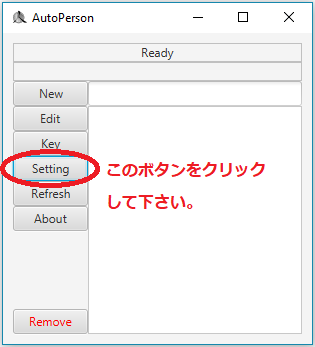
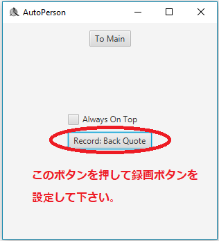
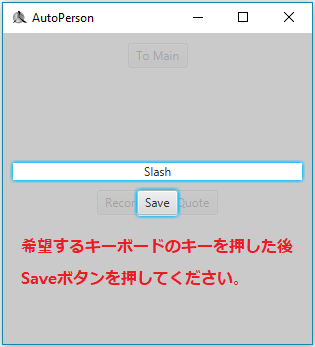
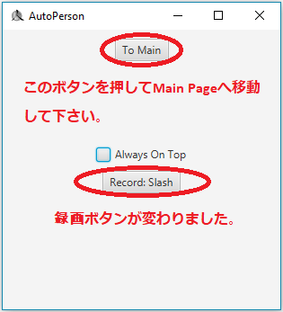

録画ボタンを設定する方法について調べてみましょう。
まずSettingボタンをクリックして下さい。

そしたら"Record: Back Quote"と書かれているのが見えます。
これは現在の録画ボタンがBack Quote(`)という意味です。
録画ボタンを変えるためにはボタンをクリックし、希望するキーボードのキーを押してください。


その後saveボタンを押せば録画ボタンが変わったのを見ることができます。
設定が終わったらTo Mainを押してMain Pageへ移動しましょう。
